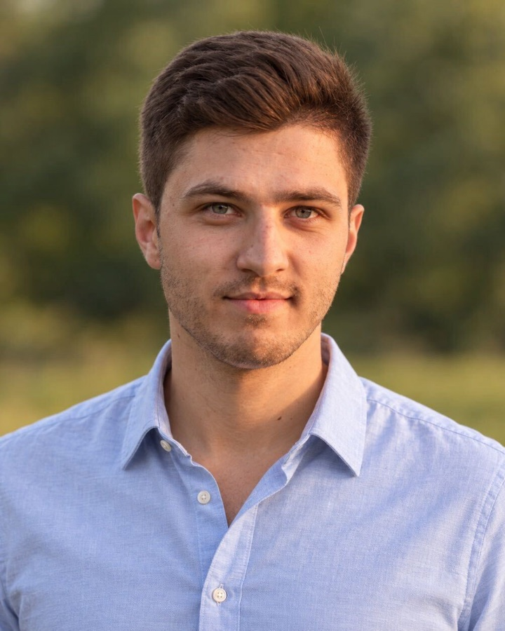

I build AI for radiology, and the infrastructure to run it inside hospitals.
I'm a PhD researcher in Medical Image Computing at the German Cancer Research Center (DKFZ) in Heidelberg. My thesis is on breast MRI. I also work on federated learning across hospitals, and contribute to open tools for 3D medical imaging developed at DKFZ, among them nnU-Net, nnInteractive, VoxTell and nnFoundation.
I've worked on deep learning since my bachelor's thesis.
Since 2022 I've been doing my PhD in Klaus Maier-Hein's Division of Medical Image Computing at the German Cancer Research Center (DKFZ) in Heidelberg. Before that I studied biomedical and computer engineering in Heidelberg and Mannheim, worked as a student research assistant in deep learning, and spent three years as a web developer.
A lot of my work ends up as open-source code that other groups use. I help maintain nnU-Net, I'm a core developer of Kaapana, and I contributed to nnInteractive and VoxTell. I also co-organize heidelberg.ai, a non-profit AI talk series for students and researchers.
Awards and funding
- €100,000 grant from the Vector Stiftung2026for my research on explainable vision–language models for radiology (ExplainSeg)
- 1st place, MAMA-SYNTH challengeMICCAI 2026breast DCE-MRI synthesized without contrast agent
- 1st place, ODELIA challengeMICCAI 2025breast cancer classification on MRI, as team lead
- Kaggle gold medal, Vesuvius Ink Detection20237th of 1,249 teams
- AI Hero AwardHelmholtz Hackathon on Sustainable AI
Research
-
Breast MRI
My thesis is on dynamic contrast-enhanced (DCE) breast MRI: classifying lesions, separating left and right breast, and synthesizing contrast-enhanced images without a contrast agent.
- MeisenMeisterfirst author, team leadA simple two-stage pipeline for breast cancer classification on MRI.MICCAI 2025
- Anguinus Sculpturaefirst authorCompositional synthesis of peak-enhancement DCE-MRI, without contrast agent.MICCAI 2026
- Feature space guidancefirst authorBreast cancer classification in DCE-MRI. Main conference.MICCAI 2026
- BreastDividershared first authorDataset and model for left/right breast segmentation, from more than 17,000 3D scans.MICCAI 2025 WS
-
Open tools I help build at DKFZ
Alongside my thesis, I contribute to open-source tools for 3D medical imaging from the Division of Medical Image Computing.
nnU-Netmaintainer & contributor The self-configuring framework for medical image segmentation. open source · MIC-DKFZ nnInteractivecontributor Promptable 3D segmentation from points, scribbles, boxes and lasso, inside Napari, MITK and 3D Slicer. 1st place, CVPR 2025 interactive segmentation challenge VoxTellcontributor Type a description, from one word to a clinical sentence, and get a 3D mask in CT, PET or MRI. CVPR 2026 nnFoundationco-author 3D foundation models for radiology, ready to use in nnU-Net. pretrained on 2.1M CT, MRI and PET volumes -
Running where the data lives
Patient data usually cannot leave the hospital, so the model has to go to the data. I work on secure, decentralized analysis across German university hospitals in the RACOON network, and on Kaapana, the open-source platform that runs these workflows.
- deki-smpcfirst authorCross-silo federated learning with secure multi-party computation and homomorphic encryption. CodeIEEE JBHI 2026
- Kaapanacore developerOpen-source platform for medical data processing, AI workflows and federated learning.arXiv 2025
- Study monitoringco-authorData exploration and progress tracking in multi-center radiology studies.arXiv 2026
-
Output a radiologist can steer and check
ExplainSeg: vision–language models for radiology whose answers can be explained, funded by the Vector Stiftung grant I received in 2026.
It builds on the promptable segmentation tools above, nnInteractive and VoxTell, where a clinician guides the model with clicks, scribbles, boxes or free text.
- nnInteractive Agentco-authorGeneral-purpose AI agents as 3D image annotators.arXiv 2026
- Lesion trackingco-authorClinician-verified, interactive lesion tracking across follow-up scans.MICCAI 2026
Papers
My first-author papers come first, then everything I co-authored, by year.
* equal contribution. Full list on Google Scholar.
Background
Work and education since 2016.
- 2022 – nowPhD researcherDKFZ, Division of Medical Image Computing (Klaus Maier-Hein)
- 2021 – 2022Student research assistantDKFZ
Brain metastasis detection and segmentation, cross-modality annotation. Published as a shared first-author paper in Eur. Radiol. Exp. (2025).
- 2020 – 2022M.Sc. Computer EngineeringTU of Applied Sciences Mannheim
Thesis on automated brain metastases analysis across multiple imaging modalities.
- 2020 – 2021Student research assistantTU of Applied Sciences Mannheim
Human action recognition and human shape estimation.
- 2020Freelance web developer
Two client websites, from concept and design to CMS training.
- 2017 – 2020Web developerJobRouter AG
Symfony web applications, unit and integration testing, digital process automation.
- 2016 – 2020B.Sc. Biomedical EngineeringHeidelberg University, with TU of Applied Sciences Mannheim
Thesis on detecting human actions in the operating room with deep learning.
Invited talk and posters
- BVM (German Conference on Medical Image Computing): poster on brain metastasis detection2026
- SASRO Annual Meeting: invited speaker, presenting Kaapana2024
- RSNA Annual Meeting: poster on image classification in Kaapana for medical practitioners2024
Community
- Co-organizer of heidelberg.ai, a non-profit AI talk seriessince 2025
- Board member, CVJM (YMCA) Mannheimsince 2021
- Co-lead of INSIGHT at SMD Mannheim, an integration programme for international students2016 – 2019
Languages: German (native), Russian (fluent), English.
Contact
If you work on breast imaging, federated learning across hospitals or explainable models for radiology, or have a challenge you'd like to team up on, I'd be glad to hear from you.
Division of Medical Image Computing
German Cancer Research Center (DKFZ), Heidelberg